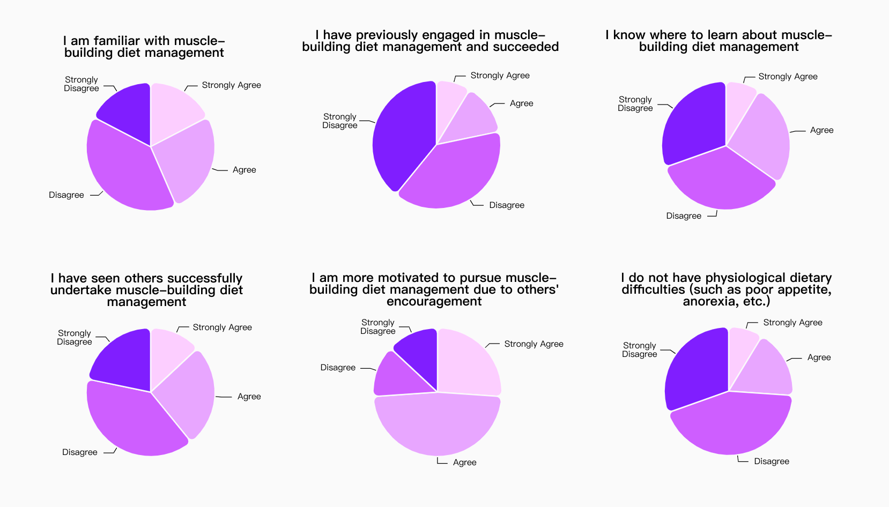

HAKKI++
Empower fitness enthusiasts in their muscle-building journey, enhancing self-efficacy and positive dietary management experiences.
Independent Development Project
✍🏻Overview
Diet management is an indispensable and decisive part of the muscle-building process.
However, most current apps are tailored for weight loss scenarios, leaving those aiming to build muscle without targeted resources and support.
HAKKI++ is a diet management app leveraging conversational AI technology.
Users can intelligently generate personalized meal plans via HAKKI++, ensuring precise daily energy intake as per the plan.
Additionally, HAKKI++ offers social and educational support to help users better understand fitness terms and concepts.
-
Timeline:
Jul. 2023- Apr. 2024
Background
Startup Project
My Role:
Independent Developer, Designer, PM
📅Roadmap & MVP
After finalizing the concept design, I planned the product roadmap and MVP features for HAKKI++. Then, I wrote the PRD and redesigned the MVP's prototype. The development plan involves using Flutter with Google's Material library, with an aim to launch on the Apple Store.
📈Background
As of January 2023, the number of people adopting muscle building as an exercise method increased by 40.6% since April 2019. However, my observations in gyms reveal that diet management apps mainly cater to weight loss, lacking support for common muscle-building challenges like 'not knowing what to eat' or 'unable to eat enough.' As a result, some individuals adopt improper diet strategies like 'dirty bulking' for quick gains. While effective short-term, this approach can raise cholesterol and blood sugar levels, potentially leading to cardiovascular diseases.
📋Competitive analysis
In the initial phase of design research, to refine the vague problem statement, I analyzed the top three rated products in the App Store.
📌Problem Statement
After analysis and summary, I focused the core issue on 'psychological experience' and clarified the initial problem statement:
Next, considering 'self-efficacy' involves psychology, while standard user research is grounded in sociology and anthropology, I integrated psychological research methods with user research to enhance scientific accuracy. Specifically, this involved three steps:
Literature review for theoretical analysis and summary.
Apply existing theories to interpret the issue and propose explanatory hypotheses.
Validate hypotheses through user research to gain deeper insights."
📑Problem Analysis
Self-efficacy plays a key role in achieving goals, tasks, and challenges. According to psychologist Bandura's theory, four main factors influence self-efficacy, outlined as follows: [1]
📝Survey
Based on these hypotheses and research objectives, I used a general self-efficacy scale
[2]
to design survey questions:
Out of 162 returned surveys, 138 indicated lower self-efficacy. Then, my qualitative analysis confirmed the four hypotheses. Specific data include:

From these results, I further divided self-efficacy issues into three specific problems:
· Experience or generative literacy issues: Users lack knowledge and resources for muscle-building diet management.
· Modeling or vicarious experience issues: Users lack role models, leading to uncertainty.
· Physiological factors: Users face physical dietary challenges.
📞Interviews
Based on these subdivided issues, I developed a semi-structured interview outline to deeply explore user motivations, pain points, and needs.
Key interview topics included:
1.What difficulties have you encountered in managing your muscle-building diet?
2.How do you typically learn about this topic? Why this method?
3.How would you rate your understanding of related knowledge?
4.How many role models do you have in this area? How do they influence you?
5.What physiological dietary challenges have you faced? How did you deal with them?
After the interviews, I clustered key phrases from users' responses to create an affinity diagram.
Based on the affinity diagram, I conducted an in-depth analysis and discussion of user views, leading to the following insights:
1.Experience or Generative Literacy
· Distrust: Users rely on online media for information but lack trust due to mixed quality.
· Confusion: Professional knowledge filled with nutritional jargon makes learning difficult.
· Calculation challenges: Systematic diet management requires quantification, which is hard for users to grasp and measure.
2. Modeling or Vicarious Experience
· Lack of confidence: Users, perceiving themselves as weak, lack the confidence to interact and learn from successful individuals.
· Need for a fitness buddy: Users desire a partner for mutual motivation and persistence but struggle with or are shy about socializing.
3. Physiological Factors
· Eating difficulties: Users believe they have a small appetite or poor absorption, necessitating gastrointestinal adjustments.
🧐Persona
Based on these insights, I categorized users into two groups for modeling purposes,
focusing on 'Experience or Generative Literacy' and 'Modeling or Vicarious Experience', to develop targeted design strategies.
· Tool-based Novices: Corresponding to Experience or Generative Literacy, they feel low self-efficacy due to a lack of knowledge, methods, and abilities in diet management.
· Emotion-based Novices: Corresponding to Modeling or Vicarious Experience, their low self-efficacy stems from a lack of confidence and social apprehension.

🎯Design Strategy
For these user profiles, I organized user goals, pain points, and needs, and established three design objectives. To better achieve these, I applied interdisciplinary theories to design, creating the following strategies:
🚩Prototype
Based on these strategies, I planned the product's main features and created a functional architecture diagram:
Then, I converted the functional architecture into an information architecture diagram, transforming feature points into perceivable user information.
🎨Delivery
Feature 1: Chat with HAKKI++ to generate personalized diet plans
💣Problems：
· Users struggle to understand and measure food quantities, unsure if they're eating enough.
· Users are also unclear about which foods digest well and lack the time to research daily meal planning.
💡Solutions：
· AI-generated plans:AI-generated plans using the built-in conversational AI "HAKKI++"".
· Plan Library: Users can create plans via dialogue and access official or expert-shared plans.
📋User Testing Feedback:
· Users unfamiliar with conversational AI lacked trust, but remained hopeful about the technology.
· Some users struggled to select from numerous plan templates, expressing a need for guidance or filtering.
Feature 2: Browse and check off daily plans
💣Problems：
· Recording diet is cumbersome and tiring due to its complex process."
· Uncertainty about daily intake, unclear how much has been eaten or if it's sufficient.
💡Solutions：
· Check-off and Eat: Users view the diet plan in 'Today's Plan' and simply check off corresponding foods for easy recording, eliminating traditional manual logging.
· Plan Library and Templates: In the 'Today's Plan' page, users can view a goal dashboard to promptly record progress on various objectives and also access a nutrition panel.
📋User Testing Feedback:
· Users appreciated the simplicity of 'check and eat', easing the recording process and understanding of food quantities.
· Users found it cumbersome to alter plans in special cases, desiring a more straightforward process.
Feature 3: Explore Knowledge Plaza
💣Problems：
· Online information is abundant and chaotic, making it hard to discern credible sources.
· Confusion about nutritional terminology, unclear about their meanings.
💡Solutions：
· Daily Quality Answer Push: HAKKI++ predicts potential user queries based on modeling data and pushes suitable content, encouraging creators to produce trustworthy content."
· Q&A Community:Users can ask Bulker questions or post in the community, fostering connections with experts and boosting confidence.
📋User Testing Feedback:
· Users were satisfied with quality answer pushes, suggesting direct expert recommendations for personal inquiries.
Feature 4: Browse Topic Plaza and find a 'Fitness Buddy.
💣Problems：
· Users lack support and encouragement from others.
· Difficulty in social interactions, hesitant to seek advice from successful individuals.
💡Solutions：
· Topic Plaza:Users engage in discussions on topics of interest for social support and are inspired by others' success stories, enhancing self-efficacy.
· Finding a Buddy: Users filter potential diet management partners by distance, height, weight, etc., and share plans or create joint plans for collaborative goal achievement.
📋User Testing Feedback:
· Users favored recipe sharing as a means of friendship building and wished to display their own recipes and progress on personal profiles to facilitate finding like-minded individuals."
📈Reflection
· Design methods and processes are not static: they adapt to specific project needs and problems.
In this project, the incorporation of psychological research paradigms into design research enhanced scientific rigor and credibility of the user research process.